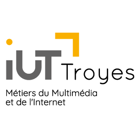

01
Design et UX
Maquetter, structurer une interface, penser l'expérience de celles et ceux qui l'utilisent.

Formation dispensée à l'IUT de Troyes, composante de l'Université de Reims Champagne-Ardenne.
MMI
// BUT Métiers du Multimédia et de l'Internet · IUT de Troyes
En MMI, tu apprends à mener un projet de A à Z : écrire, designer, filmer, coder, déployer, diffuser. Et tu découvres comment l'IA s'intègre à chaque étape, sans jamais perdre la main sur ton travail.
Bac +3 · Diplôme national · Stages et alternance · Parcoursup ou eCandidat
01 / compétences
Pas un métier figé : une boîte à outils. Tu pourras choisir ton cap sans avoir renoncé à rien.
Maquetter, structurer une interface, penser l'expérience de celles et ceux qui l'utilisent.
Cadrer, tourner, monter, animer, enregistrer et mixer. Du tournage au teaser prêt à diffuser.
Écrire de bons prompts, choisir ses outils, automatiser les tâches répétitives, vérifier ce que l'IA produit. Mais aussi en connaître les limites : droits d'auteur, biais, impact environnemental, éthique.
Voir comment on l'utilise →HTML, CSS, JavaScript, PHP : construire des sites et des applications, accessibles dès la conception.
Git, conteneurs, intégration continue, hébergement : mettre en ligne proprement et maintenir ce qu'on a construit.
Écrire pour le web, raconter une marque, bâtir une stratégie de contenu.
Planifier, travailler en équipe, tenir les délais, présenter à un client.
02 / un projet de A à Z
La polyvalence, c'est ça : une même équipe qui passe de l'idée à la mise en ligne. Fil rouge ici : une campagne pour un festival [remplacer par un vrai projet étudiant].
Comprendre la demande, cadrer, choisir un angle.
IA : brainstorm de pistes, que tu tries.
Identité, maquettes, affiche, prototype d'interface.
IA : variantes de moodboards, tu décides.
Tournage, montage, motion, bande-son.
IA : transcription, sous-titres, détourage.
Intégration, site responsive, accessibilité, mise en ligne automatisée.
IA : prototyper, relire, expliquer. Tu testes.
Publier, promouvoir, mesurer, présenter au client.
IA : idées de déclinaisons, tu pilotes.
03 / intelligence artificielle
On ne t'apprend pas à appuyer sur un bouton. On t'apprend à savoir quand l'IA fait gagner du temps, quand elle fait perdre en qualité, et quand il vaut mieux s'en passer.
Les outils changent vite. Ton esprit critique, tes méthodes et ton goût, eux, restent.
04 / parcours et professionnalisation
Projets en équipe, stages, alternance : tu te professionnalises à chaque étape, avec un diplôme national à la clé.
Tu touches à tout : design, vidéo, audio, web, communication, IA. Des projets en équipe dès le premier semestre. [Détail à compléter]
Tu te spécialises dans un parcours "Communication numérique et production de contenus". Premier stage, ou entrée en alternance.
Stage ou alternance, grand projet de fin d'études, puis emploi ou poursuite d'études. [Détail à compléter]
Même diplôme, même niveau d'exigence. En formation initiale, tu pars en stage. En alternance, tu partages ton temps entre l'IUT et une entreprise : possible en BUT2 ou en BUT3.
voie 1 · formation initiale + stages
voie 2 · alternance en BUT2 ou BUT3
Tu passes du projet pédagogique à une vraie équipe : agence, studio, service communication, collectivité, start-up. (600 heures de projets sur les 3 années)
Tu es en contrat avec une entreprise, tu te formes sur le terrain et tu construis ton réseau avant même d'être diplômé·e.
Portfolio, projets pour de vrais commanditaires, rencontres avec des professionnel·les, poursuite d'études possible. [Exemples à compléter]
05 / anciens
[Citation de l'ancien·ne étudiant·e, deux ou trois lignes sur ce que la formation lui a apporté]
[Citation de l'ancien·ne étudiant·e, deux ou trois lignes sur ce que la formation lui a apporté]
[Citation de l'ancien·ne étudiant·e, deux ou trois lignes sur ce que la formation lui a apporté]
Deux portes d'entrée selon ton parcours.
Tu candidates via Parcoursup, comme pour la plupart des formations post-bac. [Calendrier et critères à compléter]
Candidater sur ParcoursupTu candidates via eCandidat pour rejoindre directement la 2e ou la 3e année. [Publics concernés et calendrier à compléter]
Candidater sur eCandidatViens voir les studios et rencontrer les étudiant·es : [date des journées portes ouvertes].